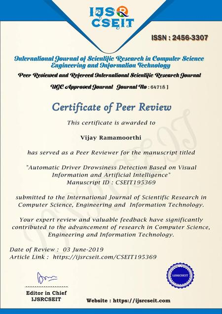

Peer Reviews
Detection of Cardiovascular Disease Using ECG Images in Machine Learning and Deep Learning International Journal of Scientific Research in Science and Technology
Introduction of Reinforcement Learning and Its Application Across Different Domain

Artificial Intelligence and Blockchain Technology in Healthcare System : A Systematic Review
A Comparative Study of Artificial Intelligence (AI) Techniques for Stock Market Prediction
Efficient Load Balancing of Resources for Different Cloud Service Providers in Cloud Computing
A Review on Security of Data in Cloud Computing Using Steganography Techniques
Advanced Unified Encrypting Methodology to Enhance The Security of Health Information in Cloud Storage Employing Blockchain
Reconfigures Protected Protocols for Advanced Cloud Computing
Design of Ai Based Vacuum Cleaning System with Information Storage
Emotion Recognition and Drowsiness Detection using Digital Image Processing and Python
Efficient Weather Prediction Model using Relevant Machine Learning Approach
An Approach for improving the Prediction of Chronic Kidney Disease using Machine learning
Cloud database for Employee Attendance using RFID and Fingerprint
Fast Hybrid Cryptosystem for Enhancing Cloud Data Security Using Elliptic Curve Cryptography and DNA Computing
Breast Cancer Prediction Using Machine Learning Algorithm with Bid Data Concept
Digital Employee using Capabilities of Artificial Intelligence to HumanIntelligence
Study on Encryption Techniques Used to Secure Cloud Storage System
Analysis of Cyber Security Solution: Security as a Services (SaaS) in Cloud Computing Environment

Automatic Driver Drowsiness Detection Based on Visual Information and Artificial Intelligence
Secure and Dynamic Multi-Keyword Ranked Search Scheme